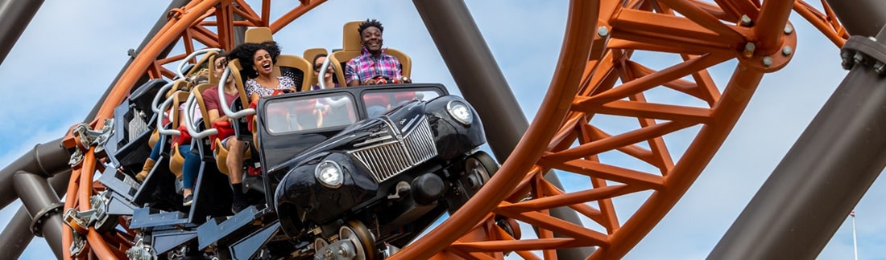
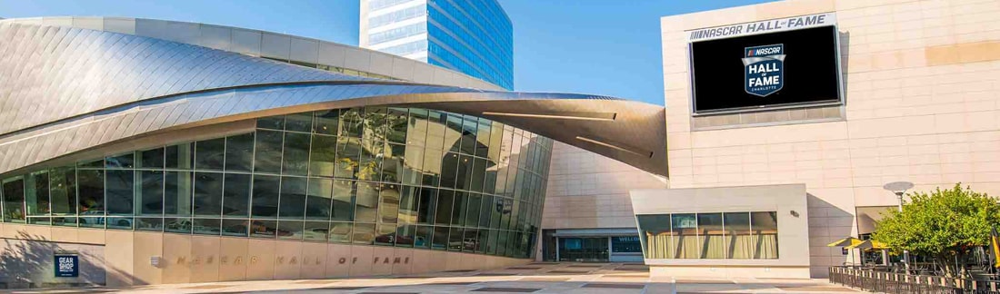
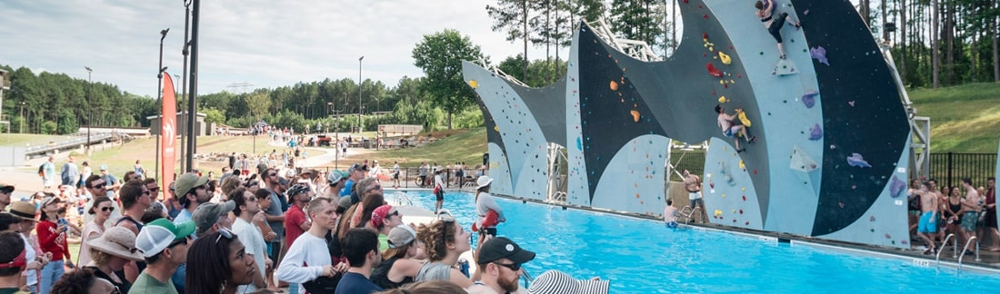

Turismo
La montaña rusa más alta y rápida del mundo, el río de aguas bravas más grande creado por el hombre, el único salón de la fama del deporte de autos de carreras de su tipo, el sitio del primer descubrimiento de oro en EE.UU. y mucho más: todo está aquí en Charlotte. Y esta rara variedad de atracciones únicas distingue a la ciudad reina.
Carowinds
Diversión

Durante más de 45 años,
Carowinds ha estado justo en el punto
donde ambas carolinas se vuelven una sola. Es algo muy especial, y queremos que veas, pruebes y experimentes
por qué nos encanta estar aquí.
Ubicado a la salida de la
I-77 en la frontera
NC/SC, tenemos todo lo que necesita para crear recuerdos para toda la
vida. Ríete con los más pequeños con las locas travesuras de Snoopy
y la pandilla PEANUTS™ en Camp Snoopy,
nuestra área para niños de 12 acres llena de áreas de juegos
interactivos y atracciones.
¡Trae a un amigo y griten a todo pulmón en una de nuestras 14
montañas rusas de clase mundial o disfrute de un espectáculo en
vivo! Empápate por completo, una y otra vez, en
Carolina Harbor, nuestro parque acuático con
todo incluido. Tus recuerdos están esperando. ¡Comienza tu aventura
en Carowinds hoy!
- 300 Carowinds Blvd
- Charlotte, NC 28273
- (704) 588-2600
- Visitar Sitio Web
Salón de la fama de Nascar
Atracciones

Convenientemente ubicado en centro de
Charlotte,
el Salón de la Fama de NASCAR es una atracción de entretenimiento
interactivo que honra la historia y el legado de NASCAR. El lugar de alta tecnología, diseñado para educar y entretener
tanto a los fanáticos de las carreras de autos como a los no
fanáticos.
Abrió el 11 de mayo de 2010 e incluye artefactos, exhibiciones
prácticas, un teatro de última generación para 278 personas, NASCAR
Hall of Fame Gear Shop, estudio de
transmisión operado por NASCAR Productions y
un estacionamiento adjunto en Brevard Street.
El sitio de 5 acres también incluye una torre de oficinas de 19
pisos de desarrollo privado y una expansión de 102,000 pies
cuadrados al Centro de Convenciones de Charlotte, resaltado por un
salón de baile de 40,000 pies cuadrados. El Salón de la Fama de
NASCAR es propiedad de la Ciudad de
Charlotte, tiene licencia de NASCAR y es
operado por la Autoridad Regional de Visitantes de
Charlotte. El objetivo de la instalación es
honrar a los íconos de NASCAR y crear un tributo perdurable a los
pilotos, miembros de la tripulación, dueños de equipos y otros que
han impactado el deporte en el pasado, presente y futuro.
- 400 E M.L.K. Jr Blvd
- Charlotte, NC 28202
- (704) 654-4400
- Visitar Sitio Web
U.S. National Whitewater Center
Aventura
Es un centro que se dedica a la promoción del estilo de vida activo al aire libre. Desde 2006, la USNWC ha estado promoviendo el acceso al aire libre para todos los niveles de participantes a través de sus programas de pases para todo el día, instrucción, escuela de liderazgo, así como festivales, carreras y otros eventos al aire libre. Ya sea que visite los 1,300 acres del Centro en el río Catawba o participe en los programas externos que se presentan en los Estados Unidos, la USNWC quiere que juegue, se relaje y aprenda al aire libre.
- 5000 Whitewater Pkwy
- Charlotte, NC 28214
- (704) 391-3900
- Visitar Sitio Web